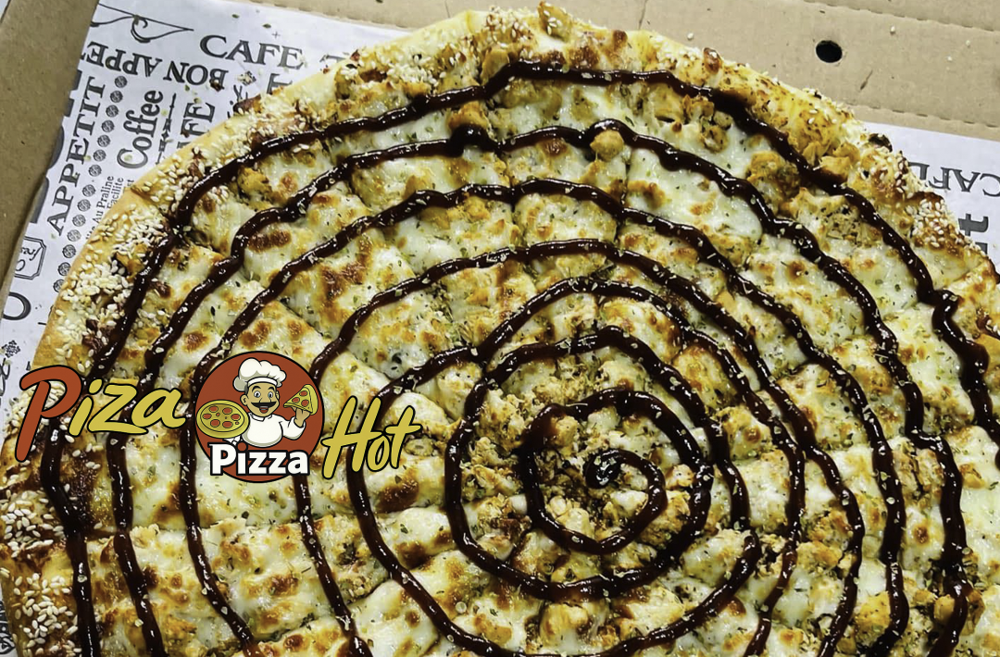
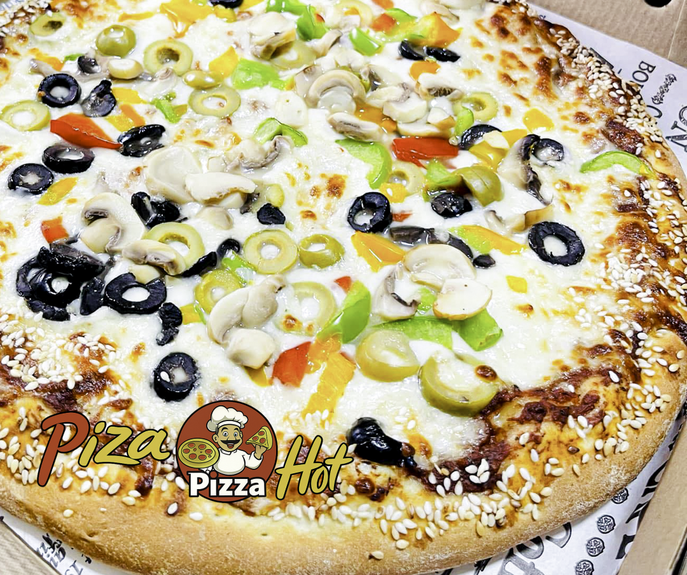

01
ROOT FOODS / COMMUNITY TABLE
لا نبدأ من قائمة جاهزة.
نبدأ من ذوقكم.
ثلاث صور، وثلاثة اتجاهات، وسؤال واحد: ما الطبق الذي يستحق أن نختبره معكم؟
الصور في هذه الصفحة تصورية لاستطلاع الرأي، وليست صورًا نهائية لأطباق متاحة حاليًا.


01اسمع
قبل أن تطوّر
قبل أن تطوّر